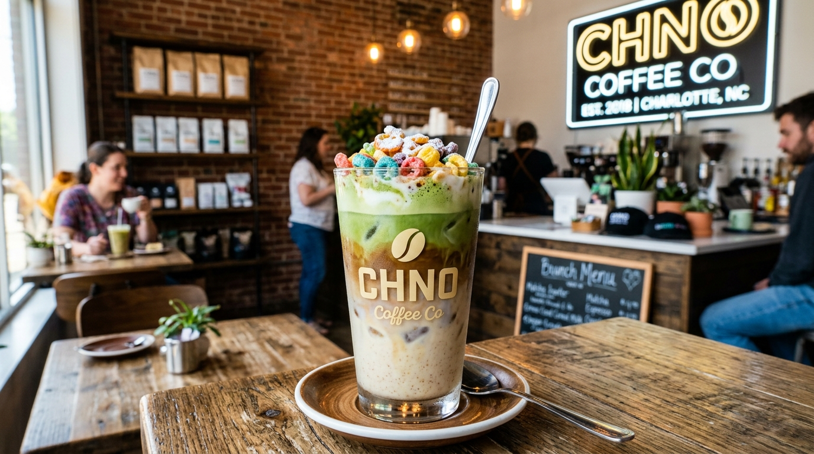

Micro-Roasted in Charlotte
We source direct-trade green coffee beans from sustainable smallholder farms and roast them in precision small batches right here in Charlotte.
Discover Roasting →Wesley Heights' premier specialty micro-roastery and artisan kitchen located at 919 Berryhill Rd in the historic Station West development. Serving ethically sourced single-origin pour-overs, nitro cold brew on tap, house botanical syrups, avocado tartines, and scratch breakfast burritos.

Small-batch micro roasting, all-day scratch food, & productive workspace.
We source direct-trade green coffee beans from sustainable smallholder farms and roast them in precision small batches right here in Charlotte.
Discover Roasting →Beyond great coffee: toasted sourdough tartines, farm-egg breakfast burritos, crisp paninis, and fresh daily bakery selections.
Discover Kitchen →Featuring high-speed gigabit Wi-Fi, abundant natural daylight, and comfortable seating designed for remote productivity and meetings.
View Hours & Location →